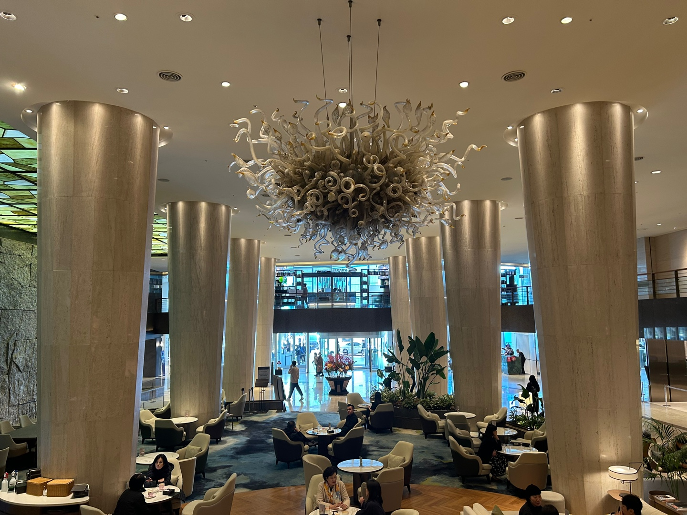
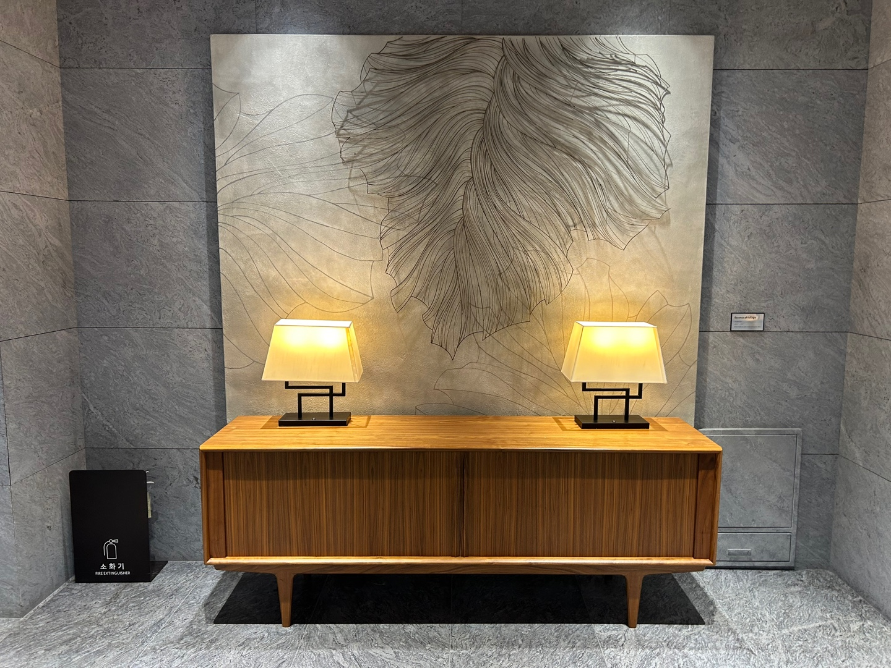
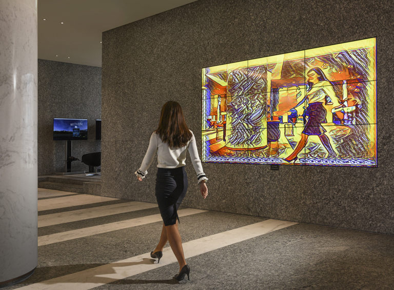
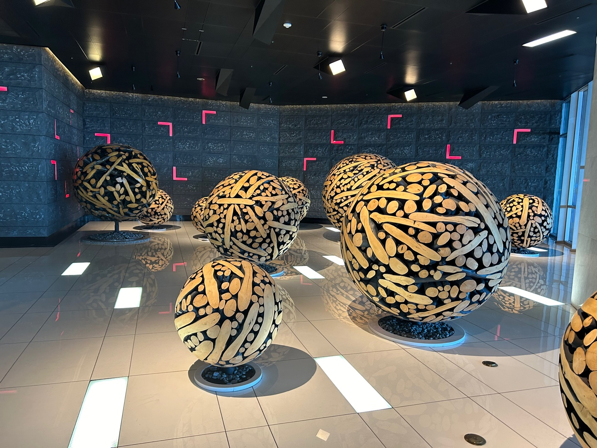
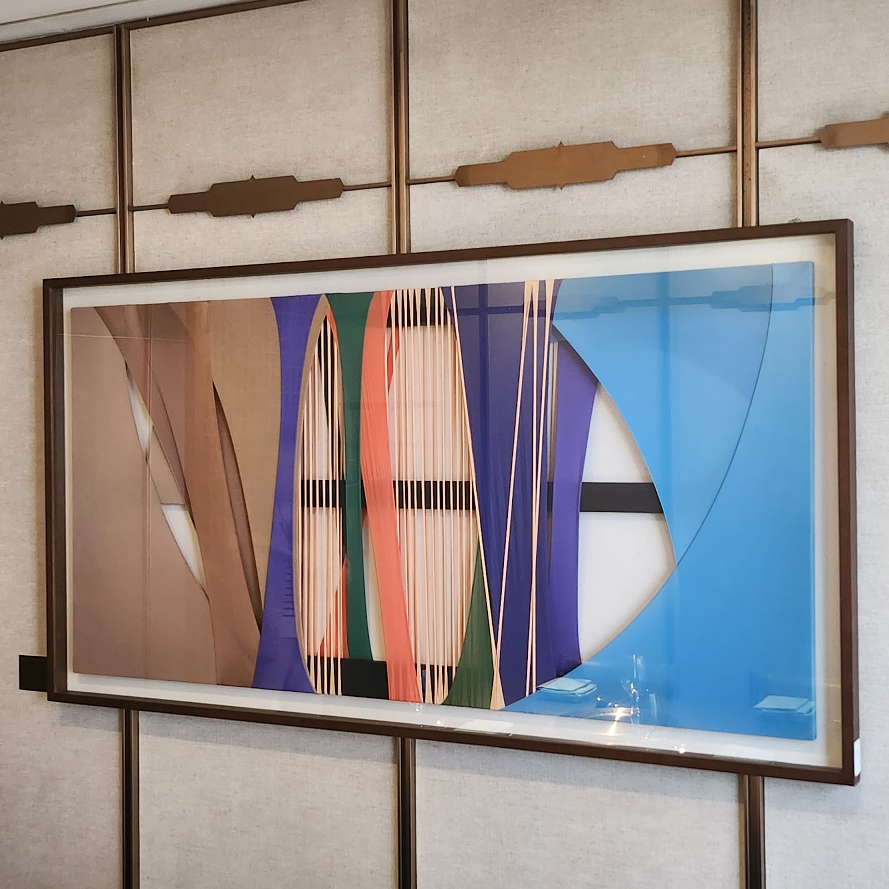

1. The Grand Lobby: Dale Chihuly's Chandelier
Located in the Grand Walkerhill Hotel lobby, Dale Chihuly's mesmerizing chandelier transforms the space into an artistic wonderland. Its bold colors and intricate shapes capture nature's essence, providing visitors with a unique artistic experience.
치훌리의 또 다른 샹들리에 작품은 어떤 장소에 설치되어 있나요?
치훌리의 또 다른 샹들리에 작품은 라스베이거스의 벨라지오 호텔 로비에 설치되어 있습니다. 이 작품은 영화 ‘오션스 일레븐’에서도 등장하며, 방문객들에게 깊은 인상을 남깁니다.
영화 ‘오션스 일레븐’에 등장한 샹들리에와 워커힐 작품의 차이는 무엇인가요?
두 작품 모두 치훌리 특유의 유리 조각 스타일을 보여주지만, 벨라지오 호텔의 작품은 훨씬 더 넓은 규모와 복잡한 디자인을 자랑합니다. 반면, 워커힐 샹들리에는 보다 아늑하고 공간에 어울리는 형태로 제작되었습니다.
데일 치훌리가 유리 조각가로 유명해진 이유는 무엇인가요?
데일 치훌리는 유리를 매개로 자연과 예술의 경계를 허물며, 독창적이고 화려한 디자인을 선보였습니다. 특히 그의 작품은 거대한 스케일과 자연에서 영감을 받은 유기적인 형태로 유명합니다. 이는 전 세계적으로 그의 작품을 아이콘으로 자리 잡게 한 이유입니다.
2. Vista Hotel: Park Yong-ho's Metal Painting
At the entrance of Vista Hotel's Walker Hall, Park Yong-ho's metal artworks seamlessly blend metal and painting, exploring harmony and balance. The pieces invite viewers to connect with their emotions through delicate textures and inspired designs.
3. Vista Hotel: A.I Mirror
The A.I Mirror near Vista Hotel's buffet showcases real-time media art, transforming visitor appearances into iconic art styles from Picasso, Chagall, and Magritte. This interactive experience creates a one-of-a-kind digital masterpiece for every guest.
4. Basement 3F: Lee Jae-hyo's Wooden Sphere
Lee Jae-hyo's sculptures on Basement 3F combine wood and nails to create works that balance raw materials and aesthetic appeal. The spherical shapes evoke a sense of connection to nature and stimulate the viewer's artistic senses.
5. Myungwolgwan: Jeong Da-woon’s Fabric Art
At the Myungwolgwan restaurant, Jeong Da-woon’s intricate fabric drawings highlight layers of colors and textures. These artworks harmonize with the serene surroundings, offering an immersive blend of art and traditional Korean barbecue.
Walkerhill Hotel redefines hospitality by integrating art, luxury, and sensory experiences into every corner of its space. Whether through breathtaking views, curated fragrances, or artistic expressions, it leaves visitors with unforgettable memories and a renewed appreciation for aesthetics.